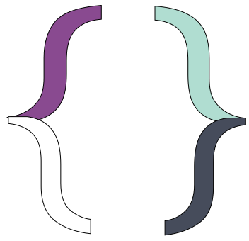

Hey! Soy Maria Fernanda Cordobés
y soy Web Developer
Hey! Soy Maria Fernanda Cordobés
y soy Web Developer
Tengo mas de 4 años de experiencia en el ámbito web, mi trabajo me apasiona muchisimo, amo ver como lineas de código se transforman en algo funcional. He trabajado con varias agencias para crear sitios web interactivos, de alto rendimiento y responsives (Funcionan en todas las plataformas y en todos los dispositivos)
A pesar de que he trabajado con muchos frameworks me encanta hacer las cosas en HTML5, CSS3 y JavaScript, la mayoría de
los sitios que he realizado están hechos en WordPress.
Me intereso mucho en aprender y conocer los requisitos de los clientes para que el resultado sea maravilloso y funcional.
Siempre busco ser mejor programadora asi que trato de estar lo más actualizada posible, todo esto porque amo lo que hago!